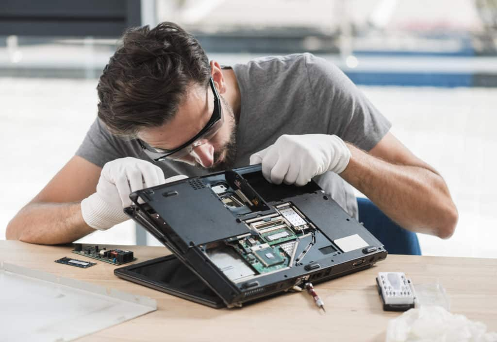
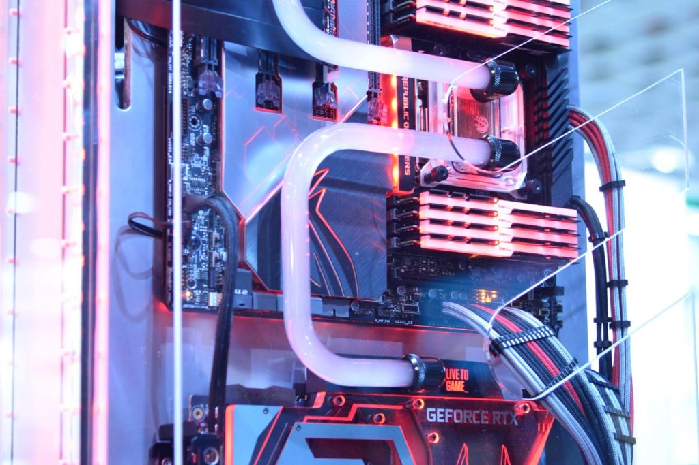

PC Building 101
- Learn the basic function of each part
- See if all your picked components are compatible with each other
- Build a pc that is meant for your needs
Diagnostics

- Learn how to set up a test bench to try different pc parts
- Diagnose different pc codes with Dr. Debug light on motherboard
- Ensure that all drivers are updated to current versions
- Uninstall problematic files
Custom Pc Builds

- Learn the benefits of water cooling against air cooling
- Take on custom requests of customers needs
- Learn how to bend water cooling tubing to different angles